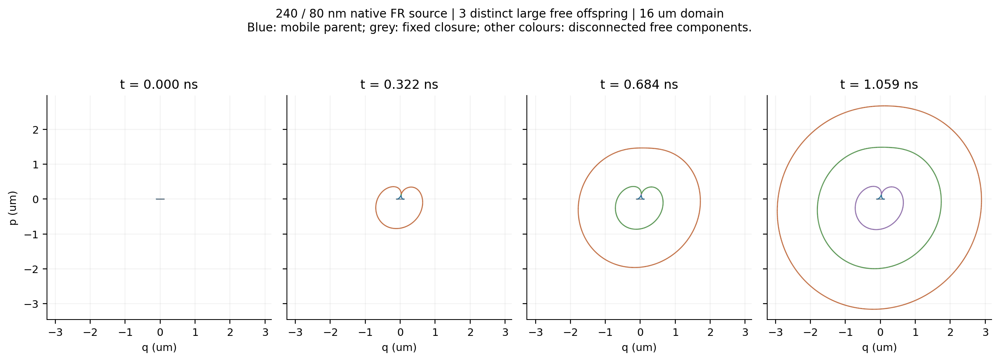
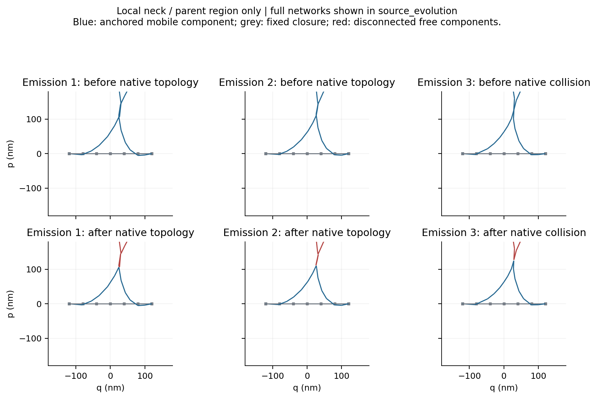
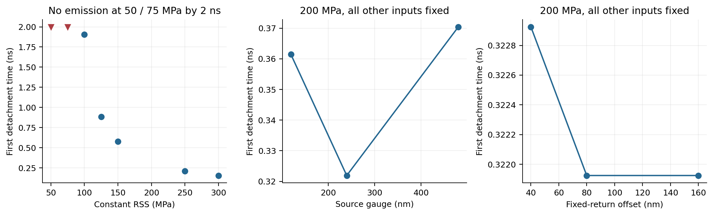
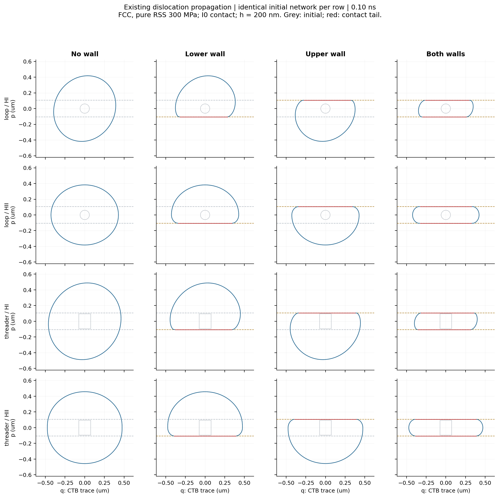
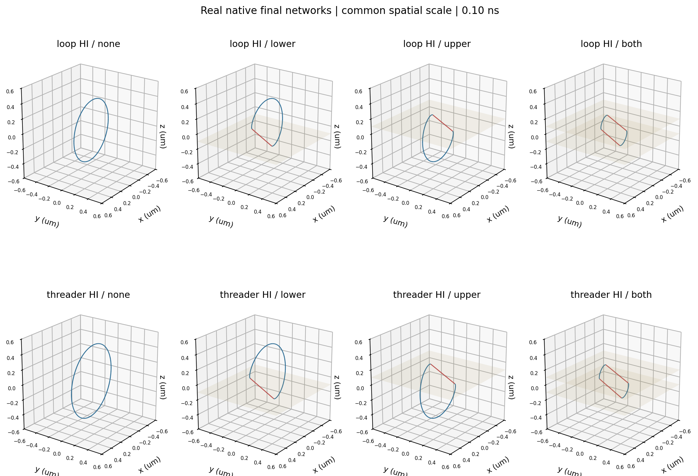
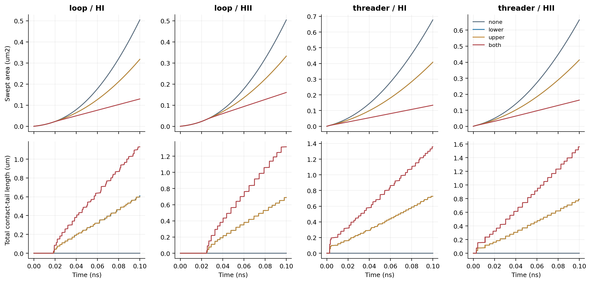
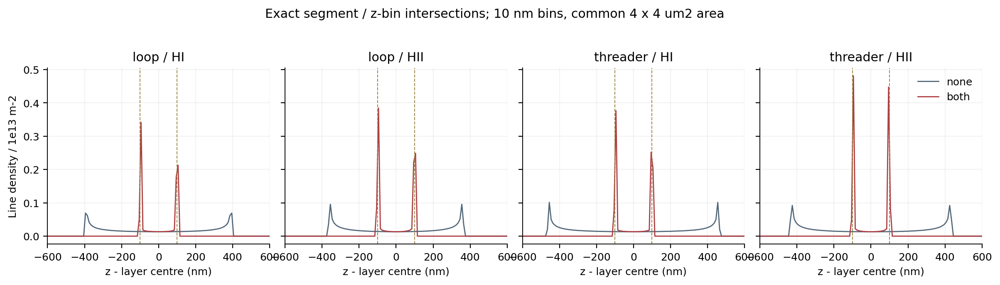

执行日期：2026-10-29。分支 codex/w3-source-contact。执行范围为 A0、A1、B0 和最小 B1；没有开展四厚度集体长时计算，没有合并 main。全部动力学来自 VM 上真实 ExaDiS；图和统计直接读取实际节点、线段、速度、力与拓扑记录。
核心回答：在完全相同的初始位错网络、材料运动律和数值参数下，第二面理想不可透射界面确实改变了已有位错的传播。该结论在 HI/HII 的闭合传播环和预置穿行环中均成立。这是有效 FCC 的 I0 上限机制验证，尚不是实际 VCoNi 孪晶强化的定量验证。
| Gate | 判定 | 已验收的范围 |
|---|---|---|
| A0 | PASS | 唯一配置、500 nm 配额、RSS/符号/原生应力、实际几何和原生响应 |
| A1 | PASS | 240/80 nm 源三次独立大子环脱离；独立恒应力扫描；几何敏感性；20 nm 网格首发复现 |
| B0 | PASS | 60 nm 独立滑移环在 300 MPa RSS 下无壁扩张，HI/HII 分开 |
| 最小 B1 | PASS | 同初态四壁面对照、无穿透、切向运动、动态解除、各原生阶段检查与步长收敛 |
| 实际 VCoNi 材料机制 | NOT_QUALIFIED | 体摩擦、迁移率与 CTB 反应未标定 |
| 四厚度强化／局域化 | NOT_RUN | 留待 W4；没有推定 200＞500＞1000＞3000 的趋势 |
configuration.py 是唯一参数入口，未知字段与尚未实现的非零体摩擦会明确拒绝。源臂长度、固定返回偏移、源数、两种迁移率和完整应力张量均由该入口生成；运行目录保存完整展开配置。原生求解器应力顺序为 xx,yy,zz,yz,xz,xy，初始化 RSS 与 Burgers 符号由同一个张量计算。A0 通过后冻结 configuration.py、geometry.py、native.py；后续运行逐字节核对冻结文件，避免修改生产参数接口后继续借用旧 PASS。
500 nm 配额改为全局滑移系配额后分配各层。实际构造 200/500/1000/3000 nm 初始化数组，均为 T 侧60源、M侧120源，12个滑移系各5/10源；将 T 源改为120后实际生成240个总源。此处四厚度仅做初始化回归。晶体学采用正交 Q、绕实验 z（晶体[111]）旋转60°的孪晶取向，每侧12系，HI/HII/soft 为6/3/3。
| 检查 | 实际结果 |
|---|---|
| 配置/实际几何测试 | 5/5 PASS；最终另加1项谱系回归，共6/6 |
| 原生响应 | 10项 PASS：Medge/Mscrew分别响应、实际源长/偏移/数量读回、位移与外应力线性、单节点/全网力一致性 |
| W1 固定节点与 Burgers 契约 | 3项原生固定节点测试保留并通过；权威源运行固定节点误差0、Burgers残差0 |
| 上游原生单元测试 | 12/12 PASS |
| 上游 FR 全流程回归 | 2/2 PASS |
| I0 原生接触测试 | 6项 PASS，含两侧/两模式切向与释放、索引优化与参考调用一致、事件到达及全部原生操作 |
参数为 b=0.255 nm、μ=54.6 GPa、ν=0.324，Medge=Mscrew=64103，体摩擦0，速度上限4000 m/s。它们是沿用基线的有效 FCC 参数，不能因为研究对象是 VCoNi 就称为 VCoNi 标定模型。当前含完整位错线的非奇异各向同性弹性、自力/芯能、外应力与线对相互作用；没有部分位错、层错、吸收/透射或残余界面 Burgers 反应。
使用真实 GLOBAL_MODEL：FORCE_CORE_SELF_PKEXT 加 FORCE_N2_ISO，直接计算线对作用。A1 使用原生 Trapezoid；B 使用原生 Euler 的事件限步路径，所有四壁条件使用同一积分器。B 主族最大步长0.5 ps、最大节点步移0.25 nm，细化为0.25 ps/0.125 nm。非周期计算域只用于容纳网络与邻居计算，不代表有自由表面镜像应力。原始 W1 的 FFT、有限势垒与已修固定节点实现保持原样。
FR_source 是两端固定的可动臂加固定闭合返回线；初始可动臂240 nm，返回偏移80 nm，固定闭合线长400 nm。固定返回是保持 Burgers 守恒的数值夹具，不是 CTB 网络，也不计作界面储存。propagation_loop 和 prepared_threader 全部是独立闭合滑移线，不称作 FR 源。运行期间没有任何人工添加子环的调用。
权威源在16 μm非周期立方域、纯HI RSS 200 MPa、最大线段40 nm下运行2202步至1.082511 ns。末态独立核对存在3条大自由闭合环，面积等效半径分别为3001.1、1837.7、723.0 nm；父源仍包含可动自由度且所有固定锚点保留，全部节点位于计算域内。
| 子代ID | 脱离时刻 / ns | 原生操作 | 后续证据 |
|---|---|---|---|
| 1 | 0.321925 | topology | 独立自由环、持续扩张；前后NPZ与节点tag留存 |
| 4 | 0.683725 | topology | 独立自由环、持续扩张；前后NPZ与节点tag留存 |
| 6 | 1.059235 | collision | 独立自由环、持续扩张；前后NPZ与节点tag留存 |
计数要求：最大标签交叠的前驱属于锚定源；脱离时允许有待原生拓扑处理的结点；最终必须成为自由闭环，持续至少3个接受步，面积等效半径达到源长的一半，并比出生半径增加至少10%。每个连通分量只继承一个主前驱谱系；微小碎环并入旧大环不能借用旧环面积。最终计数还要求三个已资格化的大环彼此独立，另做末态几何核验。


| 恒定RSS / MPa | 首次有效脱离 / ns | 解释 |
|---|---|---|
| 50 | 2 ns内未发射 | 有限观察窗；不等同无限时间临界应力 |
| 75 | 2 ns内未发射 | 有限观察窗；不等同无限时间临界应力 |
| 100 | 1.903425 | 有限观察窗；不等同无限时间临界应力 |
| 125 | 0.885925 | 有限观察窗；不等同无限时间临界应力 |
| 150 | 0.578425 | 有限观察窗；不等同无限时间临界应力 |
| 200 | 0.321925 | 有限观察窗；不等同无限时间临界应力 |
| 250 | 0.211425 | 有限观察窗；不等同无限时间临界应力 |
| 300 | 0.155425 | 有限观察窗；不等同无限时间临界应力 |
2 ns观察窗内的发射应力界限为75–100 MPa之间；这是运行时间限定的操作界限，不能直接作为材料临界应力。20 nm网格首发时刻0.314792 ns，相对40 nm网格0.321925 ns相差2.22%；20 nm网格本轮只验证首发，未声称其三发全流程收敛。源长120/240/480 nm在200 MPa下首次脱离分别0.361425/0.321925/0.370425 ns；偏移40/80/160 nm为0.322925/0.321925/0.321925 ns。长度的首次发射延迟不单调，不能把恒载发射时间当成1/L临界应力定律。

主配对族为：闭合60 nm环和预置穿行环，分别激活 HI/HII，在同一4 μm非周期域、200 nm通道、纯RSS 300 MPa下运行至共同0.1 ns终点。每个族内四条件仅改变 lower/upper 的 enabled；节点坐标、tag、约束、线段端点、Burgers、滑移面和cell逐数组完全一致，其余配置字典也完全一致。预置穿行环的跨层段不是自发生成结构，不作为同密度材料强度对比。
无壁60 nm环在两个模式中均扩张。下壁只阻挡下方传播，上壁只阻挡上方传播；双壁形成两个界面内的尾段，跨层方向运动受限，沿通道方向仍可继续演化。这组试验没有 FR 源或固定返回线，因此第二面效应不能归因于源发射减少或人为固定源回路。
| 初态/模式 | 无壁扫掠 / μm² | 下壁 / μm² | 上壁 / μm² | 双壁 / μm² | 加第二壁后相对下壁减少 |
|---|---|---|---|---|---|
| loop/HI | 0.50443 | 0.31746 | 0.31746 | 0.12962 | 59.17% |
| loop/HII | 0.50441 | 0.33270 | 0.33270 | 0.16035 | 51.80% |
| threader/HI | 0.67750 | 0.40808 | 0.40808 | 0.13428 | 67.10% |
| threader/HII | 0.66408 | 0.41407 | 0.41407 | 0.16338 | 60.54% |


定义第二壁增量 ΔQ₂=Q双壁−Q下壁，双壁非加性 I=Q双壁−Q下壁−Q上壁+Q无壁。负的面积增量表示传播扫掠减少；负的非加性表示比简单叠加有额外面积抑制。
| 初态/模式 | Δ扫掠₂ / μm² | 非加性I / μm² | 双壁接触尾段合计 / nm |
|---|---|---|---|
| loop/HI | -0.187838 | -0.000874 | 1131.2 |
| loop/HII | -0.172355 | -0.000645 | 1315.7 |
| threader/HI | -0.273803 | -0.004379 | 1357.3 |
| threader/HII | -0.250689 | -0.000685 | 1559.5 |
第二壁增量显著，扫掠非加性只有约0.00065–0.00438 μm²，远小于第二壁增量；本轮不据此宣称强非加性协同强化。时间步误差很小，但完整空间网格／拓扑参数对这些小差值的收敛尚未完成。两个单壁对照近似对称是对称初态与单滑移几何的结果，不是人工设置输出值。

接触是单侧约束，不把接触点设置为 PINNED，也不在步后把越界坐标强行裁剪回去。对真实原生 GLIDE 得到的 v=Mf，接触法向为N，若N·v<0，则施加 v接触=v−(MN)(N·v)/(N·MN)。MN由同一原生迁移率计算；因此保留滑移面约束、合法切向运动和释放。速度上限在投影之后施加，四组一致。
Euler每个接受步都是一个显式、可检查的原生积分子步；到界面事件时间由实际法向速度与间隙计算并限制dt。初始化、每个积分子步、collision、topology和remesh后分别验证。当前仅为非周期单通道的直线段网络：两端都在凸半空间内即可保证整段不非法穿透。任一步违反间隙容差1e-6 nm立即FAIL并保存构型，不通过删反例或坐标投影掩盖。
主配对族中启用界面的最小间隙为-2.274e-13 nm（浮点舍入量级）；每个接受积分子步与三个原生操作均有检查计数。四个双壁族将步长／步移上限减半后，面积与总线长的最大相对差为0.01236%。原生累计塑性与完整几何面积张量的最大闭合残差为3.212e-21；权威源为4.207e-21。
| 反向加载重启 | 实际初态 | 0.02 ns后下壁间隙 / nm | 上壁间隙 / nm | 结论 |
|---|---|---|---|---|
| HI | 与原双壁终态全部网络数组相同 | 71.75 | 72.18 | 接触点归零，允许正确解除 |
| HII | 与原双壁终态全部网络数组相同 | 75.32 | 75.14 | 接触点归零，允许正确解除 |
释放试验保留原终态的 Burgers 与拓扑，只反转应力，避免重新生成网络时同步翻转 Burgers 而继续驱动扩张。另做40/80 nm环的无壁/双壁敏感性，两种初始尺寸均能扩张且双壁减少扫掠，未改动界面规则。
接触尾段长度只统计两端都在启用界面容差内的实际可动线段。近界面储存另以±10 nm带与每条实际线段的几何交集计算；密度采用共同4×4 μm²面积乘20 nm带宽归一化。z切片用10 nm宽、精确段长分配，并验证切片总线长恢复全网总线长。没有把源的固定闭合线长当作界面堆积。
累计扫掠由每一个接受步的线段运动四边形面积计算；另用全网有向面积变化核对原生全局塑性，不能把稀疏帧之间连线当作逐步塑性。当前交付全局扫掠、厚度方向线密度、尾段与局部储存；尚未交付包含拓扑增量的完整空间塑性张量场。运动量同时提供扫掠/初始可动线长的等效传播尺度，以及保留下来的初始可动节点位移和有效节点数；后者是计算节点的几何位移，不能在Remesh后冒称全部位错的物质点轨迹。

| 保留的证据 | 判定与原因 | 处理 |
|---|---|---|
| A1_reference_tau200 | 原计数拒收：把约10 nm碎环计入三次发射 | 保留日志、构型与原result；正式判据增加尺度、增长、谱系与独立末态核验 |
| A1_ref240_80_tau200_mature | 原计数拒收：碎环并入旧环后借用面积增长 | 最大交叠主前驱分配；图结构回归覆盖此反例 |
| A1_ref240_80_tau200_unique | 三大环确已出现，但4 μm域不足容纳最早子环 | 不作正式资格证据；扩至16 μm同材料同载荷复算通过 |
| A1_mesh20_first_unique | 原谱系漏检带结点的脱离分量 | 修正为先记录脱离分量，随后要求闭环确认；junctionaware复算首发成功 |
| 60 nm环、200 MPa RSS | B0物理反例：收缩/湮灭；原runner空网络格式化也报错 | 保留全部八个早期失败；现生产版正确保存湮灭终态，数值PASS、扩张机制FAIL |
| 早期0.25 ns threader无壁试验 | 两例触发300 s资源限额，原始trajectory和failure保留 | 正式最小B1采用全部四组共同0.1 ns，不将未完成0.25 ns当作PASS |
早期日志 RESULT FAIL 有些指“未满足三次发射资格”，即使该扫描刻意只算首次发射，进程仍为0且 numerical status 为 PASS。报告以每个case的实际目标、计数和result/receipt分别判读；当前生产runner已明确输出 NUMERICAL_PASS 与 SOURCE_3_EMISSION，并给首次扫描标 NOT_RUN。所有旧原始结果均未改写。
本轮源操作受限的带TB源试验：NOT_RUN；同一TB两侧分别阻挡／储存：NOT_RUN；单一通道两面同时约束已有位错传播：限定I0条件下PASS；预置穿行态自发形成：NOT_RUN；材料强化曲线和塑性局域化：NOT_RUN / NOT_QUALIFIED。
第一步应把已验证的单通道约束扩展为可追踪材料侧别的周期层片接触模型，并在FFT力模型与所用积分器内部阶段重做一致性检查。当前I0只支持非周期、全网位于同一凸通道，不能直接拿它包住同时分布于M/T多个片层的网络；周期z也会明确拒绝。两侧取向、子代侧别和界面身份必须持续保存。
随后分别检验带TB的源操作与已发射位错的传播，再做更低驱动／速度上限影响、完整空间分辨率和拓扑参数收敛。临界应力应对每个源长独立准静态或足够长时间括定，不能使用本轮首次发射延迟拟合1/L。理想I0结论只给界面完全不透射的上限；真实VCoNi需要体摩擦/迁移率及模式依赖的CTB透射、吸收与残余Burgers守恒证据。
上述转移门槛通过后，W4再开展200/500/1000/3000 nm、相同材料与界面规则、同体积及受控初始可动密度和源空间分布的多种子比较。需要同时报告按初始谱系与按当前空间域的统计，并在共同塑性阶段比较局域化；本轮不提供厚度排序结论。
生产代码位于 code/；完整参数、实际命令、退出码、日志、初末.data/.npz、逐帧构型、接受步history、原生操作前后事件及源谱系在 evidence/；冻结代码快照随每个正式运行保留。环境和原生模块位置及W1已有固定节点补丁在 evidence/provenance/。所有本轮native runner均已退出。没有新增SHA256作业。